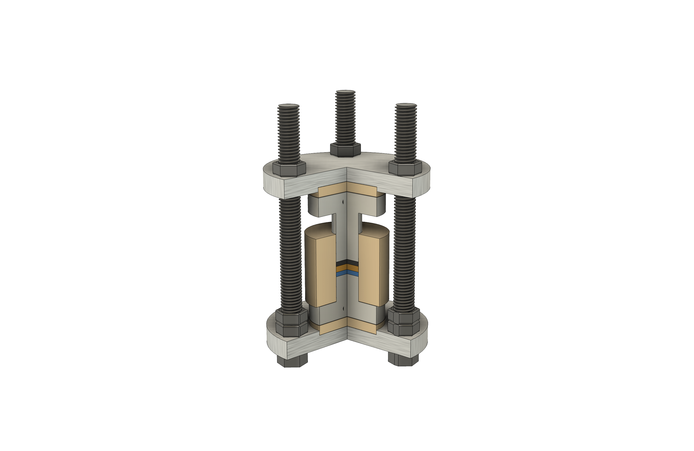

Area 01
All-solid-state batteries
Electrode and electrolyte architectures for safer, denser cells — with the interface engineering to make them last.
The CJHuang Group bridges fundamental materials science and practical energy storage by designing the next generation of battery chemistries — specifically all-solid-state batteries and anode-free lithium metal batteries.
What sets the work apart is integrating advanced multi-scale characterization with materials development. We use operando spectroscopy and 3D X-ray tomography to see the electrochemical interface as it evolves, turning observations of failure into design rules.

Electrode and electrolyte architectures for safer, denser cells — with the interface engineering to make them last.

Watching reactions happen — synchrotron X-ray spectroscopy and diffraction during real cell operation.

Reconstructing the inside of a working cell — the failure modes, the morphology, the design feedback loop.
Prof. Chen-Jui (Ben) Huang joins the Department of Chemical Engineering at National Taiwan University of Science and Technology (NTUST) to start the group.
AnnouncementResearch, people, publications and recruiting — now in one place. Reach out via the Join page if you're interested in graduate or undergraduate positions.
Announcement"X-ray Micro-Computed Tomography for Structural Analysis of All-Solid-State Battery at Pouch Cell Level" — pouch-level XCT applied end-to-end on a working ASSB.
PublicationThree focus areas — solid-state cells, operando spectroscopy, X-ray tomography.
See researchMeet the PI. Group members starting from August 2026 — see Join.
Meet the team63+ peer-reviewed articles on battery materials and synchrotron characterization.
Read publicationsOpen positions for graduate students and undergraduate researchers.
See positions